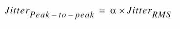
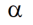

rfJcc
rfJcc( [?resultt_result] [?resultsDirt_resultsDir] [?unitt_unit] [?berg_ber] [?fromn_from] [?ton_to] [?kn_k] [?multipliern_multiplier] ) =>n_value/o_waveform/nil
Description
Calculates cycle-to-cycle jitter from the results of hbnoise or pnoise analysis.
Arguments
|
Value of bit-error rate (BER) when the signal level is peak-to-peak. This argument can be used to convert between RMS and peak-to-peak random jitter.

Where  is the scaling factor. To know scaling factor ( ) for various BER tolerance values, see RMS to Peak-to-Peak Jitter Conversion. |
|
|
Number of cycles, which determines whether one period or k-periods jitter are calculated.
The default value is |
|
Value Returned
Examples
The following example returns the value of cycle-to-cycle jitter if simulation is run in single run mode. It returns a waveform that shows sweep variable plotted on x axis and cycle-to-cycle jitter value plotted on y axis if simulation is run in sweep mode.
rfJcc(?result "pnoise_sample_pm0" ?unit "Second" ?from 1000 ?to 10000 ?k 1 ?multiplier 1)
The following example opens simulation results of hbnoise analysis stored in the specified results directory.
openResults("/home/user/hbnoise/lib/cell/view/results/maestro/ExplorerRun.0/1/test/psf")
=> "/home/user/hbnoise/lib/cell/view/results/maestro/ExplorerRun.0/1/test/psf"
The following example lists the results available in the currently open results directory.
results()
(hb_fi hb_fd hb_td hbnoise hbnoise_am
hbnoise_pm hbnoise_lsb model instance output
designParamVals primitives subckts variables
)
The following example selects the hbnoise_pm result from the current results directory.
selectResults('hbnoise_pm)
=> stdobj@0x315b06f8
The following example creates a waveform object wave1 in which sweep variable is plotted on x axis and jitter value is plotted on y axis. The signal level is rms.
wave1=rfJcc(?from 10K ?to 1G ?k 1 ?multiplier 1 ?result "hbnoise_pm" ?unit "Second")
=> srrWave:0x3574d370
The following example creates a Waveform window and returns its window ID.
win1=awvCreatePlotWindow()
=> window:3
The following example plots the waveform wave1 in the Waveform window win1.
awvPlotWaveform(
win1
list(wave1)
?expr list("rfJcc")
?color list("y6")
?lineType list("line")
?lineStyle list("dash")
?lineThickness list("thick")
?showSymbols list(t)
?dataSymbol list("o")
)
=> t
Note that the sweep variable vtune is plotted on x axis and jitter values are plotted on y axis.
The following example creates a waveform object wave2 in which sweep variable is plotted on x axis and jitter value is plotted on y axis. The signal level is peak-to-peak and BER is 1e-4.
wave2=rfJcc(?from 10K ?to 1G ?k 1 ?multiplier 1 ?result "hbnoise_pm" ?unit "Second" ?ber 1e-04)
=> srrWave:0x3570c0c0
The following example creates a Waveform window and returns its window ID.
win2=awvCreatePlotWindow()
=> window:4
The following example plots the waveform wave2 in the Waveform window win2.
awvPlotWaveform(
win2
list(wave2)
?expr list("rfJcc")
?color list("y18")
?lineType list("line")
?lineStyle list("dash")
?lineThickness list("thick")
?showSymbols list(t)
?dataSymbol list("5")
)
=> t
Note that the sweep variable vtune is plotted on x axis and jitter values are plotted on y axis.
The following example opens simulation results of pss_pnoise analysis stored in the specified results directory.
openResults("/servers/user/testcase/simulation/lib/cell/view/results/maestro/ExplorerRun.0/1/pss_pnoise_trannoise/psf")
=> "/servers/user/testcase/simulation/lib/cell/view/results/maestro/ExplorerRun.0/1/pss_pnoise_trannoise/psf"
The following example lists the results available in the currently open results directory.
results()
(pss_tran pss_td pss_fd pnoise_sample_pm0 model
instance output designParamVals primitives subckts
variables
)
The following example selects the result pnoise_sample_pm0 stored in the results directory.
selectResults('pnoise_sample_pm0)
=> stdobj@0x324df290
The following examples calculate values of cycle-to-cycle jitter from the result pnoise_sample_pm0 in units UI, Second, and ppm, respectively. The signal level is rms.
rfJcc(?from 2.5K ?to 19.2M ?k 1 ?multiplier 1 ?result "pnoise_sample_pm0" ?unit "UI")
=> 8.647249e-06
rfJcc(?from 2.5K ?to 19.2M ?k 1 ?multiplier 1 ?result "pnoise_sample_pm0" ?unit "Second")
=> 2.251888e-13
rfJcc(?from 2.5K ?to 19.2M ?k 1 ?multiplier 1 ?result "pnoise_sample_pm0" ?unit "ppm")
=> 8.647249
The following examples calculate values of cycle-to-cycle jitter from the result pnoise_sample_pm0 in units UI, Second, and ppm, respectively. The signal level is peak-to-peak and BER is 1e-12.
rfJcc(?from 2.5K ?to 19.2M ?k 1 ?multiplier 1 ?result "pnoise_sample_pm0" ?unit "UI" ?ber 1e-12)
=> 0.0001216581
rfJcc(?from 2.5K ?to 19.2M ?k 1 ?multiplier 1 ?result "pnoise_sample_pm0" ?unit "Second" ?ber 1e-12)
=> 3.168181e-12
rfJcc(?from 2.5K ?to 19.2M ?k 1 ?multiplier 1 ?result "pnoise_sample_pm0" ?unit "ppm" ?ber 1e-12)
=> 121.6581
RMS to Peak-to-Peak Jitter Conversion
To convert between RMS and peak-to-peak random jitter, the argument ?ber must be specified. The following equation can be used to convert between the two:
The following table list the scaling factor ( ) for various BER tolerance values.
) for various BER tolerance values.
| BER | Scaling Factor (Alpha) |
|---|---|
Return to top